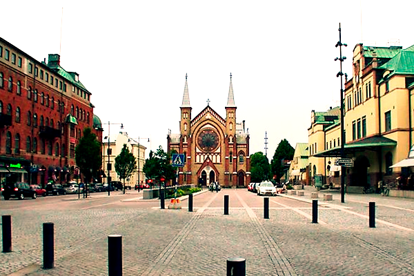

En este apartado rellenaremos las solicitudes de admisión

En este apartado rellenaremos las solicitudes de admisión
En este apartado encontraremos diferentes formaciones de empleo

En este apartado explicaremos como hacer el pago
Soy un estudiante del CPIFP Pirámide de Energías Renovables y he estado cursando en Suecia tres meses de formación en centros de trabajo para dar por finalizado mi grado superior. Durante este tiempo he estado viviendo en una ciudad llamada Gävle, compartiendo casa con otras 6 personas.
Al principio no tenía nada claro el irme de Erasmus como prácticas de trabajo al extranjero, pero en el momento que me entere que el lugar elegido por el CPIFP Pirámide, fue Gales concretamente en una población ubicada en un extremo del valle formado por el Ebbw Fawr tributario del río Ebbw en Gales, tuve claro que quería irme de prácticas al extranjero